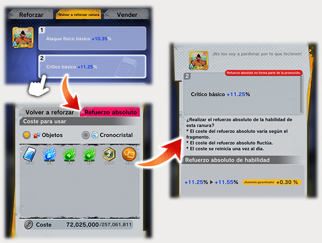

Fragmentos
Información detallada sobre los fragmentos disponibles en el juego. Los fragmentos son objetos poderosos que puedes equipar en tus personajes para mejorar sus habilidades.
Los fragmentos son objetos que tienen la habilidad de influir en los parámetros de tus personajes cuando son equipados. Puedes obtenerlos de varias maneras:
- Completando luchas que tengan fragmentos como recompensa.
- A través de intercambios en el Mercado.

Equipación de fragmentos:
Los fragmentos hacen efecto cuando están equipados. Puedes equiparlos desde el Menú > Personajes > Formación.
- Elige el personaje al que quieres equipar un fragmento.
- Elige la ranura de equipo.

Información secreta de los fragmentos:
La rareza y la categoría de los fragmentos, así como las ranuras, están estrechamente conectadas con las habilidades de los fragmentos. ¡No olvides estos tres aspectos y haz lo posible para obtener los fragmentos más poderosos!

Existen seis niveles de rareza: Hierro, Bronce, Plata, Oro, Único y Platino, de menor a mayor.
Categorías y ranuras de los fragmentos:

Las ranuras en la parte inferior de los fragmentos indican el estado de desbloqueo de las mismas. La intensidad de efecto más baja es de color verde, y la más alta es de color rojo.
La categoría más baja es F, la más alta es "神" (Dios).
La categoría se define por la intensidad de las habilidades en las ranuras. Puedes desbloquear ranuras reforzando los fragmentos.
Refuerzo de fragmentos:
Puedes reforzar las ranuras de un fragmento consecutivamente entre 1 y 30 veces, pero necesitarás materiales especiales que puedes obtener en eventos o en la tienda.

Consejos para reforzar fragmentos:
El refuerzo consecutivo puede detenerse por varias razones, como alcanzar un nivel alto de habilidad o completar el número de refuerzos seleccionados.
